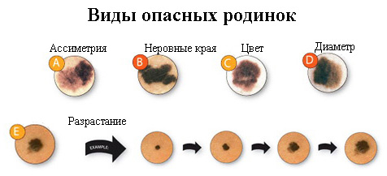

Родинки — это то, с чем все мы в той или иной степени сталкиваемся в нашей жизни. Родинки могут появиться у детей любого возраста, хотя чаще всего они встречаются у взрослых и подростков. Иногда младенцы даже рождаются с родинками. Родинки (их еще называют «невусы») — это точки на коже, обычно округлые и темные, но могут быть любой формы, размера и цвета. Родинки могут появиться на любом участке тела. Чаще они выпуклые, но многие остаются плоскими.
ПРИЧИНЫ
Большинство родинок появляются вследствие воздействия солнечного света. В нашей коже содержатся особые клетки — меланоциты. Они отвечают за производство пигмента, который делает нашу кожу темнее. При длительном пребывании на солнце меланоциты могут вырабатывать больше пигмента на определенных участках тела, создавая характерный темный внешний вид родинок. Намного реже дети рождаются с родинками. Их называют родимыми пятнами, и они встречаются примерно у 1 из 100 новорожденных.
ЧТО ДЕЛАТЬ
Главное — не паниковать. У детей родинки практически никогда не приводят к раку кожи («меланоме»). Тем не менее примерно у 500 детей ежегодно диагностируется меланома. Большинство родинок нуждаются просто в наблюдении во время регулярных осмотров. Попросите своего педиатра проверять, не изменились ли родинки ребенка. Заметив какие- либо изменения размера, цвета или формы родинки, позаботьтесь об обследовании вашего ребенка. В редких случаях может потребоваться биопсия родинки или ее удаление, если она вызывает беспокойство.
КОГДА БЕСПОКОИТЬСЯ
Родинки, с которыми ребенок родился (родимые пятна), имеют большую вероятность позже перейти в рак кожи, или меланому. Опять же, это очень редко встречается у детей. Обязательно сообщите врачу о любых родинках, которые были у вашего ребенка при рождении, поскольку за ними нужно наблюдать тщательней, чем за теми, которые появились позже. Ваш врач при необходимости может направить вашего ребенка к дерматологу.
ПРОФИЛАКТИКА И СНИЖЕНИЕ РИСКА РАКА КОЖИ
Следующие советы могут помочь снизить риск появления родинок у вашего ребенка и предотвратить развитие рака кожи в будущем:
СОВЕТ ДОКТОРОВ СИРС: А, Б, С И Д ОБСЛЕДОВАНИЯ РОДИНКИ Это простой способ запомнить характеристики родинок, которые могут вызывать беспокойство или нуждаться в осмотре врача: А — асимметрия, которая означает, что у родинки не обычная круглая или овальная форма, или форма одной части родинки отличается от формы другой части. Б — бордюр, край. Края практически всех родинок обычно округлые или овальные. Края неправильной формы или зазубренные могут быть признаком того, что родинка изменяется. С — цвет. Большинство родинок имеют однородный цвет, как правило, темно- или светло-коричневый. Обратитесь к врачу, если родинка вашего ребенка начинает приобретать различные цвета — например, красный, синий, черный или белый. Д — диаметр. Обратитесь к врачу, если родинка вашего ребенка начинает увеличиться в диаметре. Родинки, диаметр которых меньше 5 мм, как правило, не должны вызывать беспокойства. Родинку надо обследовать, если ее размер больше. |

Вышеперечисленные меры не предотвратят развитие всех родинок, так как во многом их количество определяется генетикой. Как бы то ни было, следуя этим советам, вы можете способствовать уменьшению количества родинок, которые появляются у вашего ребенка в течение жизни.
ФАКТОРЫ РИСКА РАЗВИТИЯ РАКА КОЖИ
Самый большой риск развития рака кожи — у детей со светлой кожей и тех, у кого в семье есть случаи рака кожи. Еще один значительный фактор риска — частые солнечные ожоги и чрезмерное пребывание на солнце в детстве. Вот почему так важно защищать кожу ребенка: это кардинально снизит риск развития рака кожи, когда он будет взрослым.
Здоровье ребенка от докторов Сирс / Сирс У. и др.